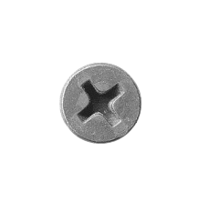

<html></html>
<head>
   <link rel="icon" href="logo ferreteria2.png" />
   <link rel="stylesheet" type="text/css" href="diseño.css">
   <title>Ferretería El Tornillo</title>
</head>
<body>

<center>
<div class="fondo1">
   <div class="letra"> <h1>Ferretería El Tornillo</h1>
   </div>
 </div>
 </center>


<ul class="menu"> 
      <center>
      <li><a href="Herramientas.html">Herramientas</a></li>
      <li><a href="Materiales.html">Materiales</a></li>
      <li><a href="Electricos.html">Eléctricos</a></li>
      <li><a href="iniciar sesion.html">Iniciar sesión</a></li>

      </center>
</ul>                        

<div class="Eslogan"> 
<h3> Si ha ti te falta a nosotros nos sobra </h3> 
</div>
<div class="Tornillos">  </div> 
<div class="Tornillos2">  </div> 

 

   
<center>

<br>
<br>
<br>
<br>
   
   

<div class="barra">
<div class="post-box">
<h3><text> ㅤㅤSomos una empresa destinada a la satisfaccion del cliente, ofreciendo un servicio seguro, facil y de calidad. Buscando siempre la seguridad en las compras, la facilidad en nuestro ambito y la calidad en nuestros nuestros productos. Porque somos el tornillo, si ha ti te falta, a nosotros nos sobra. <br><br> Misión: <br> ㅤㅤSer la ferretería de confianza de nuestra comunidad, ofreciendo productos de calidad, soluciones ㅤㅤprácticas y un servicio excepcional, contribuyendo al crecimiento y bienestar de nuestros clientes. <br><br> Visión: <br>ㅤㅤConvertirnos en la ferretería líder en la región, reconocida por nuestra amplia gama de productos, asesoramiento experto y compromiso con la satisfacción del cliente. <br><br> Valores: <br>Calidad: Ofrecemos productos de alta calidad y garantizamos su durabilidad y funcionalidad. <br><br> ㅤㅤHonestidad: Mantenemos relaciones transparentes y basadas en la confianza con nuestros clientes y proveedores. <br><br> Compromiso: Estamos comprometidos con el crecimiento y desarrollo de nuestra comunidad. </text>  </h2>
         
         
</div>
   </center>

<center>
<br>
<br>
<div class="barra1">
 <div class="post-box1">
<h3><text>Ofrecemos productos de la mas alta calidad, duracion y eficiencia, manteniendo la mejor comprension posible en los manuales. Tenemos una gran variedad de articulos los cuales ayudaran en construccion, manteniemiento, arreglos etc. </text>  </h2>
<h3><text> Nuestro almacen dispone de gran varieda de herramientas a un precio accesible que hace nombre con su gran calidad y larga duracion, los cuales ayudarian en actividades como; creacion de muebles, conexiones electricas, soldaduras o procesos de mudanza an algunos ambitos de decoracion. Entre las herramientas mas vendidas se logran mencionar:</text></h3>
</div>
</div> 
</center>

   

<div class="barra2">
<div class="post-box2">
<div class="letra2">   <h3> <text2> Martillo multiuso de alta calidad, fabricado con acero forjado resistente para máxima durabilidad y un rendimiento óptimo en todo tipo de trabajos. Su mango ergonómico de fibra de madera con recubrimiento antideslizante garantiza seguridad incluso durante largas jornadas. Ideal para carpintería, reparaciones y proyectos generales, combina fuerza y precisión con un diseño resistente a impactos y corrosión. </text></h3> 
</div>
</div>
<br>
<br>
         

<div class="barra3">
<div class="post-box3">
<div class="letra3">   <h3> <text2> Serrucho de alta calidad con hoja de acero al carbono templado, resistente a la corrosión, y dientes de triple filo para cortes rápidos y precisos. Su mango ergonómico de plástico ABS antideslizante ofrece comodidad y control. Ideal para cortar madera, paneles de yeso y materiales ligeros, con una hoja de 18" que asegura versatilidad. </text></h3>
        

<br>
<br>
                  

<div class="barra4">
<div class="post-box4">
<div class="letra4">   <h3> <text>Llave inglesa ajustable de alta calidad , fabricada en acero inoxidable resistente a la corrosión, diseñada para adaptarse a diferentes tamaños de tuercas y pernos gracias a su mecanismo preciso y mandíbula calibrada. Ideal para trabajos en el hogar, taller o industria, combina durabilidad con comodidad gracias a su mango ergonómico antideslizante. </text></h3>
        
<br>
<br>
<br>
<br>
<br>
<br>
<br>

<div class="Copyright"> <h3> Derechos de autor © 2024-2025 The Keury Designer ® </h3></div> 

<div class="UltimaBarra"> </div>
<div class="post-box5"> </div>


<br>
            
<div class="letra6"> <h3> Contactanos:  </h3> </div>
<div class="letra7"> <h4> FerreteriaElTornillo@gmail.com  </h4> </div>
<div class="letra8"> <h4> 829-000-0000  </h4> </div>
    
</body>
</html>
 


